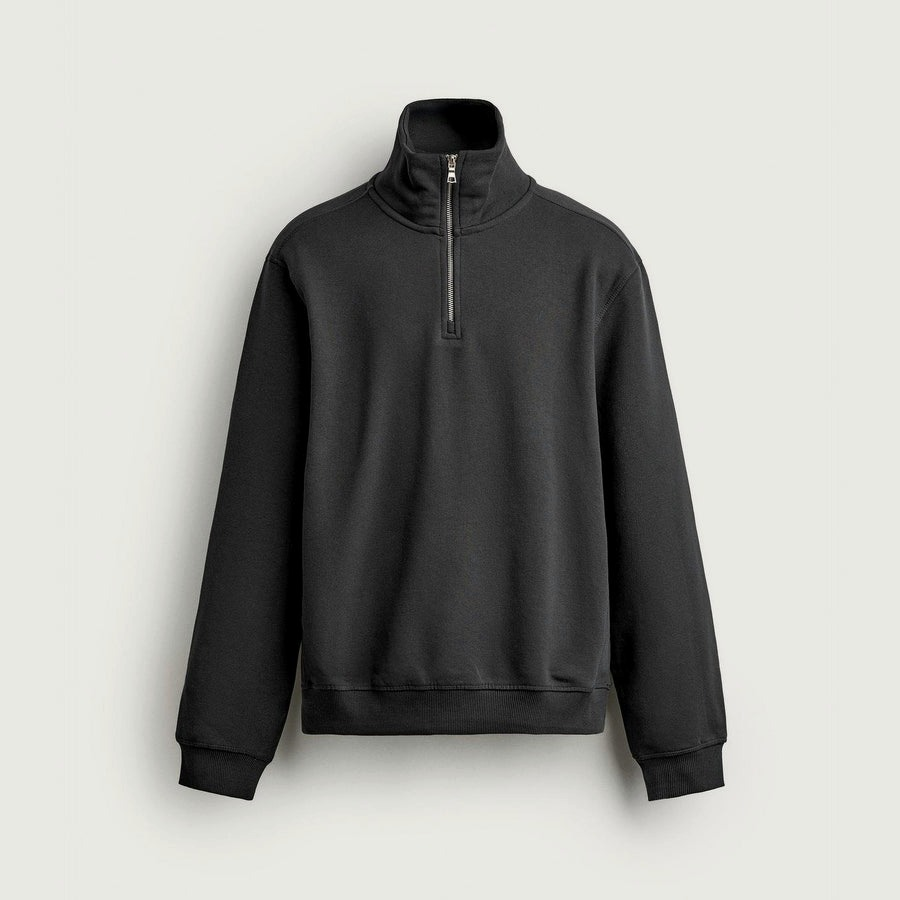
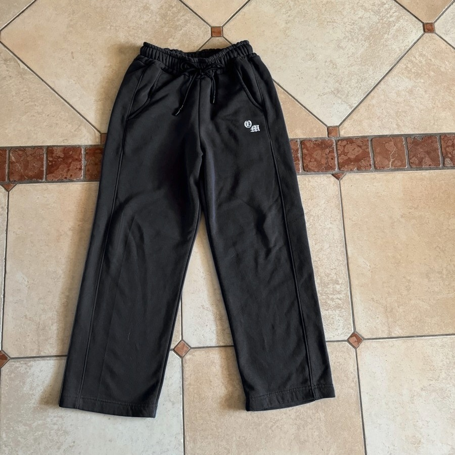
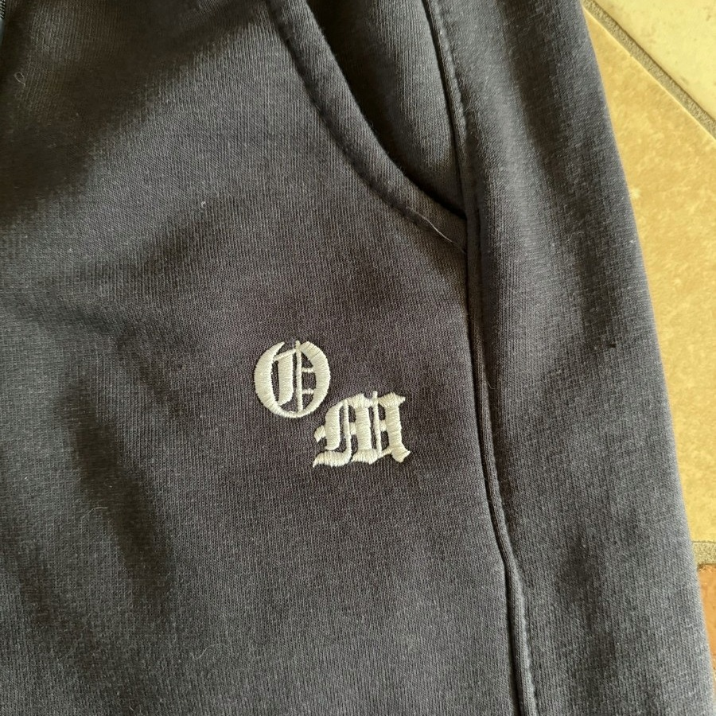
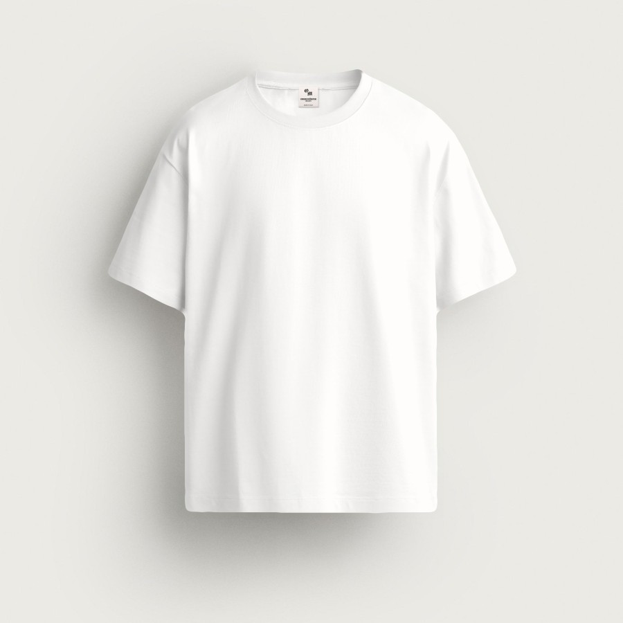
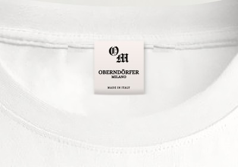
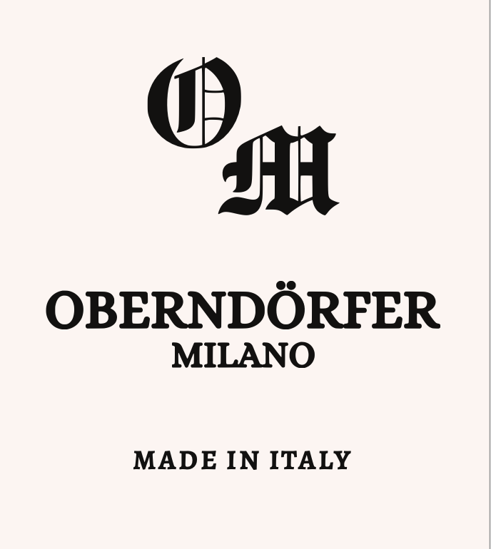

| Articolo | Foto di riferimento | Specifiche | Taglie | Quantità |
|---|
1 · Felpa mezza zip Half-Zip OM |
 |
- Modello: come il campione che vi ho consegnato.
- Stesso materiale e colore dei pantaloni (art. 2), se possibile: quasi nero, alla luce grigio scuro.
- Interno french terry.
- 100% cotone, se possibile.
- Zip: lasciare il cursore con il ponte alzato, senza tirello: metto io i miei tirelli.
- Collo alto con mezza zip in metallo, polsini e fondo a costine, vestibilità comoda.
- Nessuna stampa: davanti e retro lisci.
- Etichetta collo Oberndörfer (vedi pagina 2).
|
|
50 |
2 · Pantalone jogging gamba larga Wide-Leg Joggers OM |
  |
- Modello: come il campione che mi avete dato, con due modifiche:
– tirello come nella foto allegata;
– aggiungere una tasca posteriore sul lato destro.
- Stesso materiale, colore e grammatura del vostro campione: quasi nero, alla luce grigio scuro.
- Interno garzato.
- 100% cotone, se possibile.
- Iniziali OM già ricamate in bianco, carattere gotico, sulla tasca davanti, come nel campione.
- Senza il motivo a stelle sulla gamba: solo il ricamo OM.
- Etichetta Oberndörfer.
|
|
50 |
3 · T-shirt bianca T-shirt |
  |
- Modello: come il campione che vi ho consegnato.
- Colore: bianco.
- 240 g/m², 100% cotone, se possibile.
- Vestibilità ampia (boxy), spalla scesa, collo a costine.
- Liscia, senza stampa.
- Etichetta collo Oberndörfer cucita all'interno del collo (vedi pagina 2).
|
|
50 |
Totale150 capi (3 articoli × 50)
Note per tutti gli articoliTutto 100% cotone, se possibile: per favore confermare. Prodotto in Italia. Ogni capo imbustato singolarmente. Prima della produzione, per favore inviare un campione di colore e una foto del ricamo per approvazione.
Da compilarePrezzo unitario:
Data di consegna:

Etichetta tessuta, colore avorio, testo nero: monogramma OM, OBERNDÖRFER, MILANO, MADE IN ITALY.
Cucita all'interno del collo, al centro del retro, su tutti e tre gli articoli.
A destra: posizione sulla T-shirt.